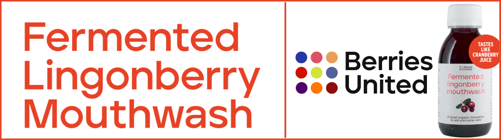

Research
Dr Pirjo Pärnänen (Associate Professor in Oral Microbiology, DMD, PhD) has conducted laboratory studies of fermented lingonberry juice for 15 years, as well as four clinical studies.
Results of studies are stunning
Laboratory and clinical studies have shown a reduction in dental plaque and bleeding of the gums, and additionally antimicrobial, anti-inflammatory, anti-cancerous, and antioxidant properties. Caries-related Streptococcus mutans and candidosis- related Candida levels are reduced as well as periodontal disease- related pathogen levels. Levels of lactobacilli on the other hand are increased, which is thought to be a beneficial probiotic effect balancing the oral microbiota.
Research papers
Here are a few examples of publications by Dr Pirjo Pärnänen and her peers:
| Topic |
Publication |
| Long-term remission of candidiasis with fermented lingonberry mouth rinse in an adult patient with APECED |
International Journal of Infectious Diseases, 2024 |
| Fermented lingonberry juice's effects on active MMP-8 (aMMP-8), bleeding on probing (BOP), and visible plaque index (VPI) in dental implants. A clinical pilot mouthwash study |
Clinical and Experimental Dental Research, 2022 |
| Effects of Fermented Lingonberry Juice Mouthwash on Salivary Parameters-A One-Year Prospective Human Intervention Study |
Dentistry Journal, 2022 |
| Lingonberry polyphenols: Potential SARS-CoV-2 inhibitors as nutraceutical tools? |
Physiological Report, 2021 |
| Isolation, characterization and regulation of moonlighting proteases from Candida glabrata cell wall |
Microbial Pathogenesis, 2020 |
| Antimicrobial and anti-inflammatory lingonberry mouthwash- a clinical pilot study in the oral cavity |
Microorganisms, 2019 |
| Fermented lingonberry juice inhibits oral tongue squamous cell carcinoma invasion in vitro similarly to curcumin |
In Vivo 2018 |
| Effect of Fermented Lingonberry Juice on Candida glabrata Intracellular Protein Expression |
International Journal of Dentistry, 2017 |
| A preparation for balancing the composition of the oral microbial flora |
EP 2585087B1, 2017 |